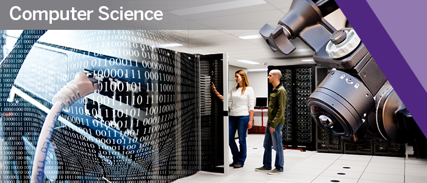

Current Courses

| 1st Year Courses 2nd Year Courses 3rd Year Courses 4th Year Courses |
| CS 1026: Computer Science Fundamentals I | This is an introductory computing programming course in the Python language. Students do not need prior programming experience to take this course. It is mandatory for students who wish to go through a major in Computer Science. |
| CS 1027: Computer Science Fundamentals II | This course follows CS 1026 as another introductory programming course, but this one is in Java. It's a steeper learning curve as it includes some more difficult topics including recursion, abstract data types, and memory management. |
| CS 1033: Multimedia and Communication | This course investigates the use of various media (e.g., text, graphics, sound, and animation) to communicate ideas and promote interaction. The course covers the design and use of a variety of software tools for media creation and editing, including picture, sound, animation, and video. The knowledge gained will be used to create websites. |
| CS 2034: Data Analytics: Principles and Tools | In this course, students learn how to use spreadsheet platforms such as Excel to analyze and visualize data. It also covers other data analysis tools and concepts such as machine learning. |
| CS 2208: Introduction to Computer Organization and Architecture | This mandatory-for-CS-students course explains how computers work internally and the different parts of the computer system. It also covers assembly language for low-level commands. |
| CS 2210: Data Structures and Algorithms | This course is similar to CS 1027 but with more advanced topics. It is also taught in Java and covers a lot of data structures and abstract data types such as graphs, hash tables, and different types of trees. It also introduces the notion of time complexity to measure the efficiency of algorithms. |
| CS 3319: Databases I | In this course, students learn about relational databases and entity-relationship diagrams. They learn how to design databases and how to create, populate, and retrieve from them using the SQL language. |
| CS 3346: Artificial Intelligence I | This course introduces some of the fundamental concepts behind artificial intelligence. It includes various forms of searches, Bayesian networks, machine learning, and deep neural networks. |
| CS 3388: Computer Graphics I | This course explores different techniques for computer graphics both in 2D and 3D. It teaches students how to create, transform, and apply shading to computer graphics using code and a lot of mathematics! |
| CS 4474: Human-Computer Interaction | This course covers topics in human-computer interaction which is essentially the study of how people use computers and technology. Students in this course will study different ways to analyze interactive systems and principles for designing such systems to be effective for their users. |
| CS 4481: Image Compression | In this course, students study different compression and encoding techniques for compressing images. They study not only the common formats like JPEG and GIF but other, more advanced, approaches as well. |
| CS 4482: Game Programming | This course covers a variety of topics related to video games including their history, principles of game design, ethics in video games, and the game development process. Students in this course are required to create their own small video game as a group project! |
For a complete list of courses being offered, visit this site.